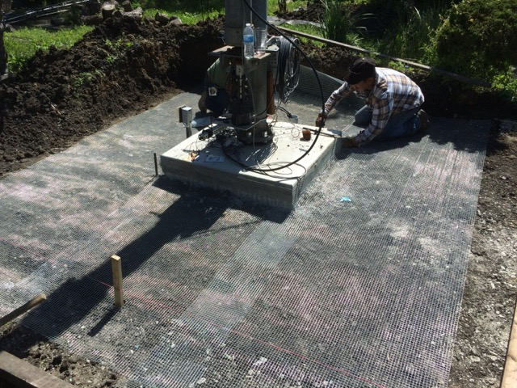

<!-- MHonArc v2.6.19+ -->
<!--X-Subject: Re: [NCDXC Chat] AB&#45;577 and N6BT DXU&#45;32 as 160M TX Antenna (And Hi	Z Triangle) -->
<!--X-From-R13: Oaqernf Xhatr &#60;naqernfNa6ah.bet> -->
<!--X-Date: Thu, 26 May 2016 11:50:45 &#45;0500 -->
<!--X-Message-Id: C097C53C&#45;4FA9&#45;496A&#45;A261&#45;59D15C3CF591@n6nu.org -->
<!--X-Content-Type: multipart/alternative -->
<!--X-Reference: 002801d1b75e$bee0d6f0$3ca284d0$@comcast.net -->
<!--X-Reference: CAOJjquhajbTTe4DKuDDwPs+zr7vti_5Ktv6YL8gZ85xEwsjmJg@mail.gmail.com -->
<!--X-Reference: 003501d1b76d$6a393f70$3eabbe50$@comcast.net -->
<!--X-Derived: jpgiIrovobsvt.jpg -->
<!--X-Head-End-->
<!DOCTYPE HTML PUBLIC "-//W3C//DTD HTML 4.01 Transitional//EN"
        "http://www.w3.org/TR/html4/loose.dtd">
<html>
<head>
<title>Re: [NCDXC Chat] AB-577 and N6BT DXU-32 as 160M TX Antenna (And Hi	Z Triangle)</title>
<link rev="made" href="mailto:andreas@n6nu.org">
</head>
<body>
<!--X-Body-Begin-->
<!--X-User-Header-->
<!--X-User-Header-End-->
<!--X-TopPNI-->
<hr>
[<a href="msg12186.html">Date Prev</a>][<a href="msg12188.html">Date Next</a>][<a href="msg12186.html">Thread Prev</a>][<a href="msg12188.html">Thread Next</a>][<a href="maillist.html#12187">Date Index</a>][<a href="threads.html#12187">Thread Index</a>]
<!--X-TopPNI-End-->
<!--X-MsgBody-->
<!--X-Subject-Header-Begin-->
<h1>Re: [NCDXC Chat] AB-577 and N6BT DXU-32 as 160M TX Antenna (And Hi	Z Triangle)</h1>
<hr>
<!--X-Subject-Header-End-->
<!--X-Head-of-Message-->
<ul>
<li><em>To</em>: Rich &lt;<a href="mailto:rholoch%40comcast.net">rholoch@comcast.net</a>&gt;</li>
<li><em>Subject</em>: Re: [NCDXC Chat] AB-577 and N6BT DXU-32 as 160M TX Antenna (And Hi	Z Triangle)</li>
<li><em>From</em>: Andreas Junge &lt;<a href="mailto:andreas%40n6nu.org">andreas@n6nu.org</a>&gt;</li>
<li><em>Date</em>: Thu, 26 May 2016 09:50:45 -0700</li>
<li><em>Cc</em>: Paul N6PSE &lt;<a href="mailto:pauln6pse%40gmail.com">pauln6pse@gmail.com</a>&gt;, <a href="mailto:chat%40ncdxc.org">chat@ncdxc.org</a></li>
<li><em>Dkim-signature</em>: v=1; a=rsa-sha256; c=relaxed/relaxed;	d=n6nu-org.20150623.gappssmtp.com; s=20150623;	h=mime-version:subject:from:in-reply-to:date:cc:message-id:references	:to; bh=rPauYiEFnNcvn55e3JjA2OucfgKs6rlWvb2YcAkxj7Q=;	b=BGVuszRJgbhpjgJHJ8xMEFDDLAwsFvjunfIodAFXljeIZvUzI2Fc77zP1hOVR+15YC	RVxKiijqaWyROEcwuIxRFiwk5rrO2XCTQ8PB9HKs2qwB5B7wRcZqT3GHhypeh5Vs4U5T	6EP8xf3D/ACXAKZVxeSAAX9iW7OQ/V9K63g7wjmucAbEA2QXO7rVNVLDbOUekAl8Btr+	mRacReR+JyAe1a5Bj30O+cCtJl5he41znW4OzzYw4jo2fkiw+WHuO1FpBuJJqduLvrgi	B6p+hLjzeXbrTFOEm0kXxo/e/J/7OAwm9Ip3YYO5X7JA7UKR6uq5O+zF9w4sFYbIsgds	+ysQ==</li>
<li><em>In-reply-to</em>: &lt;003501d1b76d$6a393f70$3eabbe50$@comcast.net&gt;</li>
<li><em>List-archive</em>: &lt;<a href="http://mail.ncdxc.org/mailman/private/chat_ncdxc.org/">http://mail.ncdxc.org/mailman/private/chat_ncdxc.org/</a>&gt;</li>
<li><em>List-help</em>: &lt;<a href="mailto:chat-request@ncdxc.org?subject=help">mailto:chat-request@ncdxc.org?subject=help</a>&gt;</li>
<li><em>List-id</em>: NCDXC Discussion List &lt;chat.ncdxc.org&gt;</li>
<li><em>List-post</em>: &lt;<a href="mailto:chat@ncdxc.org">mailto:chat@ncdxc.org</a>&gt;</li>
<li><em>List-subscribe</em>: &lt;<a href="http://mail.ncdxc.org/mailman/listinfo/chat_ncdxc.org">http://mail.ncdxc.org/mailman/listinfo/chat_ncdxc.org</a>&gt;,	&lt;<a href="mailto:chat-request@ncdxc.org?subject=subscribe">mailto:chat-request@ncdxc.org?subject=subscribe</a>&gt;</li>
<li><em>List-unsubscribe</em>: &lt;<a href="http://mail.ncdxc.org/mailman/options/chat_ncdxc.org">http://mail.ncdxc.org/mailman/options/chat_ncdxc.org</a>&gt;,	&lt;<a href="mailto:chat-request@ncdxc.org?subject=unsubscribe">mailto:chat-request@ncdxc.org?subject=unsubscribe</a>&gt;</li>
<li><em>References</em>: &lt;002801d1b75e$bee0d6f0$3ca284d0$@comcast.net&gt;	&lt;<a href="msg12185.html">CAOJjquhajbTTe4DKuDDwPs+zr7vti_5Ktv6YL8gZ85xEwsjmJg@mail.gmail.com</a>&gt;	&lt;003501d1b76d$6a393f70$3eabbe50$@comcast.net&gt;</li>
</ul>
<!--X-Head-of-Message-End-->
<!--X-Head-Body-Sep-Begin-->
<hr>
<!--X-Head-Body-Sep-End-->
<!--X-Body-of-Message-->
<table width="100%"><tr><td style="">One thing I am doing right now is to lay &#x201C;chickenwire&#x201D; throughout my backyard while doing the landscaping. Antennas are good, but I think the most critical is the ground system on 160M.<div class=""><br class=""></div><div class="">73, Andreas, N6NU<br class=""><div class=""><br class=""></div><div class=""></div><div class=""><br class=""></div><div class=""><br class=""></div><div class=""><br class=""></div><div class=""><br class=""><div><blockquote type="cite" class=""><div class="">On May 26, 2016, at 9:41 AM, Rich via Chat &lt;<a rel="nofollow" href="mailto:chat@ncdxc.org" class="">chat@ncdxc.org</a>&gt; wrote:</div><br class="Apple-interchange-newline"><div class=""><div class="WordSection1" style="page: WordSection1; font-family: Helvetica; font-size: 12px; font-style: normal; font-variant-caps: normal; font-weight: normal; letter-spacing: normal; orphans: auto; text-align: start; text-indent: 0px; text-transform: none; white-space: normal; widows: auto; word-spacing: 0px; -webkit-text-stroke-width: 0px;"><div style="margin: 0in 0in 0.0001pt; font-size: 12pt; font-family: 'Times New Roman', serif;" class=""><span style="font-size: 11pt; font-family: Calibri, sans-serif; color: rgb(31, 73, 125);" class="">Thanks and good luck to you too. I do a lot of &#x201C;dreaming and scheming&#x201D; out in the back yard during the summer &#x2013; and especially now that the last two (Bouvet and Glorioso) are probably years away. That means my biggest DX-ing &#x201C;push&#x201D; is 160M since I stopped bothering with Challenge a few years ago.<o:p class=""></o:p></span></div><div style="margin: 0in 0in 0.0001pt; font-size: 12pt; font-family: 'Times New Roman', serif;" class=""><span style="font-size: 11pt; font-family: Calibri, sans-serif; color: rgb(31, 73, 125);" class=""><o:p class="">&nbsp;</o:p></span></div><div style="margin: 0in 0in 0.0001pt; font-size: 12pt; font-family: 'Times New Roman', serif;" class=""><span style="font-size: 11pt; font-family: Calibri, sans-serif; color: rgb(31, 73, 125);" class="">For me &#x2013; it&#x2019;s all about improving the RX &#x2013; my best was VK0EK, FT5ZM, CU2KG and Dietmar on V51. Everything else is &#x201C;garden variety&#x201D;.<span class="Apple-converted-space">&nbsp;</span><o:p class=""></o:p></span></div><div style="margin: 0in 0in 0.0001pt; font-size: 12pt; font-family: 'Times New Roman', serif;" class=""><span style="font-size: 11pt; font-family: Calibri, sans-serif; color: rgb(31, 73, 125);" class=""><o:p class="">&nbsp;</o:p></span></div><div style="margin: 0in 0in 0.0001pt; font-size: 12pt; font-family: 'Times New Roman', serif;" class=""><span style="font-size: 11pt; font-family: Calibri, sans-serif; color: rgb(31, 73, 125);" class="">I was very lucky that Dave, K3EL remembered our QSO &#x2013; which followed what happened on FT5ZM &#x2013; meaning I had to repeat my call many times. He heard me much better than I heard him, so even the silly little MA160V with full power is surprisingly good. More surface area and efficiency would be better since the efficiency of the MA160V is maybe 40% - 15000 watts in, 600 watts out (I think).<o:p class=""></o:p></span></div><div style="margin: 0in 0in 0.0001pt; font-size: 12pt; font-family: 'Times New Roman', serif;" class=""><span style="font-size: 11pt; font-family: Calibri, sans-serif; color: rgb(31, 73, 125);" class=""><o:p class="">&nbsp;</o:p></span></div><div style="margin: 0in 0in 0.0001pt; font-size: 12pt; font-family: 'Times New Roman', serif;" class=""><span style="font-size: 11pt; font-family: Calibri, sans-serif; color: rgb(31, 73, 125);" class="">The Hi Z triangle would cover every direction I need and help get me to DXCC on top band just a tad bit faster &#x2013; but in a much more enjoyable way.<span class="Apple-converted-space">&nbsp;</span><o:p class=""></o:p></span></div><div style="margin: 0in 0in 0.0001pt; font-size: 12pt; font-family: 'Times New Roman', serif;" class=""><span style="font-size: 11pt; font-family: Calibri, sans-serif; color: rgb(31, 73, 125);" class=""><o:p class="">&nbsp;</o:p></span></div><div style="margin: 0in 0in 0.0001pt; font-size: 12pt; font-family: 'Times New Roman', serif;" class=""><span style="font-size: 11pt; font-family: Calibri, sans-serif; color: rgb(31, 73, 125);" class="">The AB-577 with huge top hat has an efficiency of about 55% - so 1500 watts in, 825 watts out.<span class="Apple-converted-space">&nbsp;</span><o:p class=""></o:p></span></div><div style="margin: 0in 0in 0.0001pt; font-size: 12pt; font-family: 'Times New Roman', serif;" class=""><span style="font-size: 11pt; font-family: Calibri, sans-serif; color: rgb(31, 73, 125);" class=""><o:p class="">&nbsp;</o:p></span></div><div style="margin: 0in 0in 0.0001pt; font-size: 12pt; font-family: 'Times New Roman', serif;" class=""><span style="font-size: 11pt; font-family: Calibri, sans-serif; color: rgb(31, 73, 125);" class="">This means on TX and RX I can greatly improve my situation.<span class="Apple-converted-space">&nbsp;</span><o:p class=""></o:p></span></div><div style="margin: 0in 0in 0.0001pt; font-size: 12pt; font-family: 'Times New Roman', serif;" class=""><span style="font-size: 11pt; font-family: Calibri, sans-serif; color: rgb(31, 73, 125);" class=""><o:p class="">&nbsp;</o:p></span></div><div style="margin: 0in 0in 0.0001pt; font-size: 12pt; font-family: 'Times New Roman', serif;" class=""><span style="font-size: 11pt; font-family: Calibri, sans-serif; color: rgb(31, 73, 125);" class="">Now &#x2013; if I can find someone selling a Hi Z triangle array less than the $705 Dx Engineering price &#x2013; that would be sweet.<o:p class=""></o:p></span></div><div style="margin: 0in 0in 0.0001pt; font-size: 12pt; font-family: 'Times New Roman', serif;" class=""><span style="font-size: 11pt; font-family: Calibri, sans-serif; color: rgb(31, 73, 125);" class=""><o:p class="">&nbsp;</o:p></span></div><div style="margin: 0in 0in 0.0001pt; font-size: 12pt; font-family: 'Times New Roman', serif;" class=""><span style="font-size: 11pt; font-family: Calibri, sans-serif; color: rgb(31, 73, 125);" class="">73,<o:p class=""></o:p></span></div><div style="margin: 0in 0in 0.0001pt; font-size: 12pt; font-family: 'Times New Roman', serif;" class=""><span style="font-size: 11pt; font-family: Calibri, sans-serif; color: rgb(31, 73, 125);" class=""><o:p class="">&nbsp;</o:p></span></div><div style="margin: 0in 0in 0.0001pt; font-size: 12pt; font-family: 'Times New Roman', serif;" class=""><span style="font-size: 11pt; font-family: Calibri, sans-serif; color: rgb(31, 73, 125);" class="">Rich<o:p class=""></o:p></span></div><div style="margin: 0in 0in 0.0001pt; font-size: 12pt; font-family: 'Times New Roman', serif;" class=""><span style="font-size: 11pt; font-family: Calibri, sans-serif; color: rgb(31, 73, 125);" class="">KY6R<o:p class=""></o:p></span></div><div style="margin: 0in 0in 0.0001pt; font-size: 12pt; font-family: 'Times New Roman', serif;" class=""><span style="font-size: 11pt; font-family: Calibri, sans-serif; color: rgb(31, 73, 125);" class=""><o:p class="">&nbsp;</o:p></span></div><div style="margin: 0in 0in 0.0001pt; font-size: 12pt; font-family: 'Times New Roman', serif;" class=""><span style="font-size: 11pt; font-family: Calibri, sans-serif; color: rgb(31, 73, 125);" class=""><o:p class="">&nbsp;</o:p></span></div><div style="margin: 0in 0in 0.0001pt; font-size: 12pt; font-family: 'Times New Roman', serif;" class=""><b class=""><span style="font-size: 11pt; font-family: Calibri, sans-serif;" class="">From:</span></b><span style="font-size: 11pt; font-family: Calibri, sans-serif;" class=""><span class="Apple-converted-space">&nbsp;</span>Paul N6PSE [<a rel="nofollow" href="mailto:pauln6pse@gmail.com" class="">mailto:pauln6pse@gmail.com</a>]<span class="Apple-converted-space">&nbsp;</span><br class=""><b class="">Sent:</b><span class="Apple-converted-space">&nbsp;</span>Thursday, May 26, 2016 9:11 AM<br class=""><b class="">To:</b><span class="Apple-converted-space">&nbsp;</span>Rich &lt;<a rel="nofollow" href="mailto:rholoch@comcast.net" class="">rholoch@comcast.net</a>&gt;<br class=""><b class="">Cc:</b><span class="Apple-converted-space">&nbsp;</span><a rel="nofollow" href="mailto:chat@ncdxc.org" class="">chat@ncdxc.org</a><br class=""><b class="">Subject:</b><span class="Apple-converted-space">&nbsp;</span>Re: [NCDXC Chat] AB-577 and N6BT DXU-32 as 160M TX Antenna (And Hi Z Triangle)<o:p class=""></o:p></span></div><div style="margin: 0in 0in 0.0001pt; font-size: 12pt; font-family: 'Times New Roman', serif;" class=""><o:p class="">&nbsp;</o:p></div><div class=""><div style="margin: 0in 0in 0.0001pt; font-size: 12pt; font-family: 'Times New Roman', serif;" class="">Hi Rich, like you, I am planning to improve my station's 160 meter performance.&nbsp;<o:p class=""></o:p></div><div class=""><div style="margin: 0in 0in 0.0001pt; font-size: 12pt; font-family: 'Times New Roman', serif;" class=""><o:p class="">&nbsp;</o:p></div></div><div class=""><div style="margin: 0in 0in 0.0001pt; font-size: 12pt; font-family: 'Times New Roman', serif;" class="">I am currently using a Buckmaster 270' off center fed dipole with the apex at 55'. I know, its way too low for 160 meters. Before the OCF, I was using an Alpha Delta 80/160 inverted V antenna. That was good enough to work FT5ZM and K1N on topband.&nbsp;<o:p class=""></o:p></div></div><div class=""><div style="margin: 0in 0in 0.0001pt; font-size: 12pt; font-family: 'Times New Roman', serif;" class=""><o:p class="">&nbsp;</o:p></div></div><div class=""><div style="margin: 0in 0in 0.0001pt; font-size: 12pt; font-family: 'Times New Roman', serif;" class="">If cost were no object (which it is) I would probably chose the Force 12 Magnum 160VX2 shortened 160m vertical:&nbsp;<a rel="nofollow" href="http://www.force12inc.com/products/magnum-160vx2-shortened-160m-vertical-antenna-62-feet-tall.html" style="color: purple; text-decoration: underline;" class="">http://www.force12inc.com/products/magnum-160vx2-shortened-160m-vertical-antenna-62-feet-tall.html</a><o:p class=""></o:p></div></div><div class=""><div style="margin: 0in 0in 0.0001pt; font-size: 12pt; font-family: 'Times New Roman', serif;" class=""><o:p class="">&nbsp;</o:p></div></div><div class=""><div style="margin: 0in 0in 0.0001pt; font-size: 12pt; font-family: 'Times New Roman', serif;" class="">I've also looked at the Titanex V160 but the cost of shipping from Germany is just too high.&nbsp;<o:p class=""></o:p></div></div><div class=""><div style="margin: 0in 0in 0.0001pt; font-size: 12pt; font-family: 'Times New Roman', serif;" class=""><o:p class="">&nbsp;</o:p></div></div><div class=""><div style="margin: 0in 0in 0.0001pt; font-size: 12pt; font-family: 'Times New Roman', serif;" class="">If I had the space, I would seriously consider the DX Engineering 160 meter Thunderbolt vertical: &nbsp;<a rel="nofollow" href="http://www.dxengineering.com/search/product-line/dx-engineering-160-meter-thunderbolt-vertical-antennas?autoview=SKU&amp;keyword=160%20meter&amp;sortby=BestKeywordMatch&amp;sortorder=Ascending" style="color: purple; text-decoration: underline;" class="">http://www.dxengineering.com/search/product-line/dx-engineering-160-meter-thunderbolt-vertical-antennas?autoview=SKU&amp;keyword=160%20meter&amp;sortby=BestKeywordMatch&amp;sortorder=Ascending</a><o:p class=""></o:p></div></div><div class=""><div style="margin: 0in 0in 0.0001pt; font-size: 12pt; font-family: 'Times New Roman', serif;" class=""><o:p class="">&nbsp;</o:p></div></div><div class=""><div style="margin: 0in 0in 0.0001pt; font-size: 12pt; font-family: 'Times New Roman', serif;" class="">I have also considered the Zerofive-Antennas 43 foot 10-160 multi-band vertical with elevated radials. I like the cost at under $300 but the performance is quite compromised.&nbsp;<o:p class=""></o:p></div></div><div class=""><div style="margin: 0in 0in 0.0001pt; font-size: 12pt; font-family: 'Times New Roman', serif;" class=""><o:p class="">&nbsp;</o:p></div></div><div class=""><div style="margin: 0in 0in 0.0001pt; font-size: 12pt; font-family: 'Times New Roman', serif;" class="">My choice is likely to be a 60' Spiderbeam pole with an inverted L helically wound around the pole and the short horizontal leg will be directed towards the South Pacific. I will use three 65' elevated radials stapled to the top of my redwood fences going away from the antenna.&nbsp; I do not have room for a field of radials on the ground.&nbsp;<o:p class=""></o:p></div></div><div class=""><div style="margin: 0in 0in 0.0001pt; font-size: 12pt; font-family: 'Times New Roman', serif;" class=""><o:p class="">&nbsp;</o:p></div></div><div class=""><div style="margin: 0in 0in 0.0001pt; font-size: 12pt; font-family: 'Times New Roman', serif;" class="">I've talked to Mike-K7IR at Steppir about modifying a BigIR for 160 meters but he says the motors could not push a longer/heavier tape up a taller vertical tube so no plans for a Steppir 160 meter antenna.&nbsp;<o:p class=""></o:p></div></div><div class=""><div style="margin: 0in 0in 0.0001pt; font-size: 12pt; font-family: 'Times New Roman', serif;" class=""><o:p class="">&nbsp;</o:p></div></div><div class=""><div style="margin: 0in 0in 0.0001pt; font-size: 12pt; font-family: 'Times New Roman', serif;" class="">Good luck with your project!<o:p class=""></o:p></div></div><div class=""><div style="margin: 0in 0in 0.0001pt; font-size: 12pt; font-family: 'Times New Roman', serif;" class=""><o:p class="">&nbsp;</o:p></div></div><div class=""><div style="margin: 0in 0in 0.0001pt; font-size: 12pt; font-family: 'Times New Roman', serif;" class="">Paul N6PSE<o:p class=""></o:p></div></div><div class=""><div style="margin: 0in 0in 0.0001pt; font-size: 12pt; font-family: 'Times New Roman', serif;" class=""><o:p class="">&nbsp;</o:p></div></div><div class=""><div style="margin: 0in 0in 0.0001pt; font-size: 12pt; font-family: 'Times New Roman', serif;" class=""><o:p class="">&nbsp;</o:p></div></div><div class=""><div style="margin: 0in 0in 0.0001pt; font-size: 12pt; font-family: 'Times New Roman', serif;" class=""><o:p class="">&nbsp;</o:p></div></div><div class=""><div style="margin: 0in 0in 0.0001pt; font-size: 12pt; font-family: 'Times New Roman', serif;" class=""><o:p class="">&nbsp;</o:p></div></div><div class=""><div style="margin: 0in 0in 0.0001pt; font-size: 12pt; font-family: 'Times New Roman', serif;" class=""><o:p class="">&nbsp;</o:p></div></div><div class=""><div style="margin: 0in 0in 0.0001pt; font-size: 12pt; font-family: 'Times New Roman', serif;" class=""><o:p class="">&nbsp;</o:p></div></div></div><div class=""><div style="margin: 0in 0in 0.0001pt; font-size: 12pt; font-family: 'Times New Roman', serif;" class=""><o:p class="">&nbsp;</o:p></div><div class=""><div style="margin: 0in 0in 0.0001pt; font-size: 12pt; font-family: 'Times New Roman', serif;" class="">On Thu, May 26, 2016 at 7:56 AM, Rich via Chat &lt;<a rel="nofollow" href="mailto:chat@ncdxc.org" target="_blank" style="color: purple; text-decoration: underline;" class="">chat@ncdxc.org</a>&gt; wrote:<o:p class=""></o:p></div><blockquote style="border-style: none none none solid; border-left-color: rgb(204, 204, 204); border-left-width: 1pt; padding: 0in 0in 0in 6pt; margin-left: 4.8pt; margin-right: 0in;" class="" type="cite"><div class=""><div class=""><div style="margin: 0in 0in 0.0001pt; font-size: 12pt; font-family: 'Times New Roman', serif;" class="">I&#x2019;ve written a blog about some experiments I&#x2019;ve been doing with 160M antennas &#x2013; and have found some really great surprises, that I think are all &#x201C;corroborated&#x201D; and explained in the ON4UN Low Band book. I worked FT5ZM and VK0EK with my &#x201C;lowly&#x201D; Cushcraft MA160V, but on RX, both were quite lousy.<span class="Apple-converted-space">&nbsp;</span><o:p class=""></o:p></div><div style="margin: 0in 0in 0.0001pt; font-size: 12pt; font-family: 'Times New Roman', serif;" class="">&nbsp;<o:p class=""></o:p></div><div style="margin: 0in 0in 0.0001pt; font-size: 12pt; font-family: 'Times New Roman', serif;" class=""><a rel="nofollow" href="https://ky6r.wordpress.com/2016/05/26/my-best-160m-antenna-was-right-under-my-nose/" target="_blank" style="color: purple; text-decoration: underline;" class="">https://ky6r.wordpress.com/2016/05/26/my-best-160m-antenna-was-right-under-my-nose/</a><o:p class=""></o:p></div><div style="margin: 0in 0in 0.0001pt; font-size: 12pt; font-family: 'Times New Roman', serif;" class="">&nbsp;<o:p class=""></o:p></div><div style="margin: 0in 0in 0.0001pt; font-size: 12pt; font-family: 'Times New Roman', serif;" class="">&nbsp;<o:p class=""></o:p></div><div style="margin: 0in 0in 0.0001pt; font-size: 12pt; font-family: 'Times New Roman', serif;" class="">Enter my tower and giant cap hat &#x2013; my 40/20M yagi with 46 foot elements and 28&#x2019; boom as a cap hat!<o:p class=""></o:p></div><div style="margin: 0in 0in 0.0001pt; font-size: 12pt; font-family: 'Times New Roman', serif;" class="">&nbsp;<o:p class=""></o:p></div><div style="margin: 0in 0in 0.0001pt; font-size: 12pt; font-family: 'Times New Roman', serif;" class="">And just a good &#x2013; adding a Hi Z Triangle could seriously up my Top Band game.<span class="Apple-converted-space">&nbsp;</span><o:p class=""></o:p></div><div style="margin: 0in 0in 0.0001pt; font-size: 12pt; font-family: 'Times New Roman', serif;" class="">&nbsp;<o:p class=""></o:p></div><div style="margin: 0in 0in 0.0001pt; font-size: 12pt; font-family: 'Times New Roman', serif;" class="">Your feedback is greatly appreciated, and I also am in the market for a Hi Z Triangle for 160M &#x2013; 40 or 50&#x2019; spacing.<span class="Apple-converted-space">&nbsp;</span><o:p class=""></o:p></div><div style="margin: 0in 0in 0.0001pt; font-size: 12pt; font-family: 'Times New Roman', serif;" class="">&nbsp;<o:p class=""></o:p></div><div style="margin: 0in 0in 0.0001pt; font-size: 12pt; font-family: 'Times New Roman', serif;" class="">Finally &#x2013; I&#x2019;d rather put up 3 black Jackite poles with wire rather than shiny aluminum verticals for the Hi -Z. What say you? A good idea?<o:p class=""></o:p></div><div style="margin: 0in 0in 0.0001pt; font-size: 12pt; font-family: 'Times New Roman', serif;" class="">&nbsp;<o:p class=""></o:p></div><div style="margin: 0in 0in 0.0001pt; font-size: 12pt; font-family: 'Times New Roman', serif;" class="">73,<o:p class=""></o:p></div><div style="margin: 0in 0in 0.0001pt; font-size: 12pt; font-family: 'Times New Roman', serif;" class="">&nbsp;<o:p class=""></o:p></div><div style="margin: 0in 0in 0.0001pt; font-size: 12pt; font-family: 'Times New Roman', serif;" class="">Rich<o:p class=""></o:p></div><div style="margin: 0in 0in 0.0001pt; font-size: 12pt; font-family: 'Times New Roman', serif;" class="">KY6R<o:p class=""></o:p></div><div style="margin: 0in 0in 0.0001pt; font-size: 12pt; font-family: 'Times New Roman', serif;" class="">&nbsp;<o:p class=""></o:p></div><div style="margin: 0in 0in 0.0001pt; font-size: 12pt; font-family: 'Times New Roman', serif;" class="">P.S &#x2013; if you or know of someone selling a Hi Z 160M RX antenna, please point them my way - offline<o:p class=""></o:p></div></div></div><p class="MsoNormal" style="margin: 0in 0in 12pt; font-size: 12pt; font-family: 'Times New Roman', serif;"><br class="">_______________________________________________<br class="">Chat mailing list<br class=""><a rel="nofollow" href="mailto:Chat@ncdxc.org" style="color: purple; text-decoration: underline;" class="">Chat@ncdxc.org</a><br class=""><a rel="nofollow" href="http://mail.ncdxc.org/mailman/listinfo/chat_ncdxc.org" target="_blank" style="color: purple; text-decoration: underline;" class="">http://mail.ncdxc.org/mailman/listinfo/chat_ncdxc.org</a><br class="">Message delivered to<span class="Apple-converted-space">&nbsp;</span><a rel="nofollow" href="mailto:pauln6pse@gmail.com" style="color: purple; text-decoration: underline;" class="">pauln6pse@gmail.com</a><o:p class=""></o:p></p></blockquote></div><div style="margin: 0in 0in 0.0001pt; font-size: 12pt; font-family: 'Times New Roman', serif;" class=""><o:p class="">&nbsp;</o:p></div></div></div><span style="font-family: Helvetica; font-size: 12px; font-style: normal; font-variant-caps: normal; font-weight: normal; letter-spacing: normal; orphans: auto; text-align: start; text-indent: 0px; text-transform: none; white-space: normal; widows: auto; word-spacing: 0px; -webkit-text-stroke-width: 0px; float: none; display: inline !important;" class="">_______________________________________________</span><br style="font-family: Helvetica; font-size: 12px; font-style: normal; font-variant-caps: normal; font-weight: normal; letter-spacing: normal; orphans: auto; text-align: start; text-indent: 0px; text-transform: none; white-space: normal; widows: auto; word-spacing: 0px; -webkit-text-stroke-width: 0px;" class=""><span style="font-family: Helvetica; font-size: 12px; font-style: normal; font-variant-caps: normal; font-weight: normal; letter-spacing: normal; orphans: auto; text-align: start; text-indent: 0px; text-transform: none; white-space: normal; widows: auto; word-spacing: 0px; -webkit-text-stroke-width: 0px; float: none; display: inline !important;" class="">Chat mailing list</span><br style="font-family: Helvetica; font-size: 12px; font-style: normal; font-variant-caps: normal; font-weight: normal; letter-spacing: normal; orphans: auto; text-align: start; text-indent: 0px; text-transform: none; white-space: normal; widows: auto; word-spacing: 0px; -webkit-text-stroke-width: 0px;" class=""><span style="font-family: Helvetica; font-size: 12px; font-style: normal; font-variant-caps: normal; font-weight: normal; letter-spacing: normal; orphans: auto; text-align: start; text-indent: 0px; text-transform: none; white-space: normal; widows: auto; word-spacing: 0px; -webkit-text-stroke-width: 0px; float: none; display: inline !important;" class=""><a rel="nofollow" href="mailto:Chat@ncdxc.org" class="">Chat@ncdxc.org</a></span><br style="font-family: Helvetica; font-size: 12px; font-style: normal; font-variant-caps: normal; font-weight: normal; letter-spacing: normal; orphans: auto; text-align: start; text-indent: 0px; text-transform: none; white-space: normal; widows: auto; word-spacing: 0px; -webkit-text-stroke-width: 0px;" class=""><span style="font-family: Helvetica; font-size: 12px; font-style: normal; font-variant-caps: normal; font-weight: normal; letter-spacing: normal; orphans: auto; text-align: start; text-indent: 0px; text-transform: none; white-space: normal; widows: auto; word-spacing: 0px; -webkit-text-stroke-width: 0px; float: none; display: inline !important;" class=""><a rel="nofollow" href="http://mail.ncdxc.org/mailman/listinfo/chat_ncdxc.org" class="">http://mail.ncdxc.org/mailman/listinfo/chat_ncdxc.org</a></span><br style="font-family: Helvetica; font-size: 12px; font-style: normal; font-variant-caps: normal; font-weight: normal; letter-spacing: normal; orphans: auto; text-align: start; text-indent: 0px; text-transform: none; white-space: normal; widows: auto; word-spacing: 0px; -webkit-text-stroke-width: 0px;" class=""><span style="font-family: Helvetica; font-size: 12px; font-style: normal; font-variant-caps: normal; font-weight: normal; letter-spacing: normal; orphans: auto; text-align: start; text-indent: 0px; text-transform: none; white-space: normal; widows: auto; word-spacing: 0px; -webkit-text-stroke-width: 0px; float: none; display: inline !important;" class="">Message delivered to <a rel="nofollow" href="mailto:n6nu@arrl.net" class="">n6nu@arrl.net</a></span></div></blockquote></div><br class=""></div></div></td></tr></table>
<!--X-Body-of-Message-End-->
<!--X-MsgBody-End-->
<!--X-Follow-Ups-->
<hr>
<ul><li><strong>Follow-Ups</strong>:
<ul>
<li><strong><a name="12188" href="msg12188.html">Re: [NCDXC Chat] AB-577 and N6BT DXU-32 as 160M TX Antenna (And Hi	Z Triangle)</a></strong>
<ul><li><em>From:</em> &quot;Rich&quot; &lt;rholoch@comcast.net&gt;</li></ul></li>
<li><strong><a name="12190" href="msg12190.html">Re: [NCDXC Chat] AB-577 and N6BT DXU-32 as 160M TX Antenna (And Hi Z Triangle)</a></strong>
<ul><li><em>From:</em> Jim Brown &lt;k9yc@audiosystemsgroup.com&gt;</li></ul></li>
</ul></li></ul>
<!--X-Follow-Ups-End-->
<!--X-References-->
<ul><li><strong>References</strong>:
<ul>
<li><strong><a name="12184" href="msg12184.html">[NCDXC Chat] AB-577 and N6BT DXU-32 as 160M TX Antenna (And Hi Z	Triangle)</a></strong>
<ul><li><em>From:</em> &quot;Rich&quot; &lt;rholoch@comcast.net&gt;</li></ul></li>
<li><strong><a name="12185" href="msg12185.html">Re: [NCDXC Chat] AB-577 and N6BT DXU-32 as 160M TX Antenna (And Hi	Z Triangle)</a></strong>
<ul><li><em>From:</em> Paul N6PSE &lt;pauln6pse@gmail.com&gt;</li></ul></li>
<li><strong><a name="12186" href="msg12186.html">Re: [NCDXC Chat] AB-577 and N6BT DXU-32 as 160M TX Antenna (And Hi	Z Triangle)</a></strong>
<ul><li><em>From:</em> &quot;Rich&quot; &lt;rholoch@comcast.net&gt;</li></ul></li>
</ul></li></ul>
<!--X-References-End-->
<!--X-BotPNI-->
<ul>
<li>Prev by Date:
<strong><a href="msg12186.html">Re: [NCDXC Chat] AB-577 and N6BT DXU-32 as 160M TX Antenna (And Hi	Z Triangle)</a></strong>
</li>
<li>Next by Date:
<strong><a href="msg12188.html">Re: [NCDXC Chat] AB-577 and N6BT DXU-32 as 160M TX Antenna (And Hi	Z Triangle)</a></strong>
</li>
<li>Previous by thread:
<strong><a href="msg12186.html">Re: [NCDXC Chat] AB-577 and N6BT DXU-32 as 160M TX Antenna (And Hi	Z Triangle)</a></strong>
</li>
<li>Next by thread:
<strong><a href="msg12188.html">Re: [NCDXC Chat] AB-577 and N6BT DXU-32 as 160M TX Antenna (And Hi	Z Triangle)</a></strong>
</li>
<li>Index(es):
<ul>
<li><a href="maillist.html#12187"><strong>Date</strong></a></li>
<li><a href="threads.html#12187"><strong>Thread</strong></a></li>
</ul>
</li>
</ul>

<!--X-BotPNI-End-->
<!--X-User-Footer-->
<!--X-User-Footer-End-->
</body>
</html>
